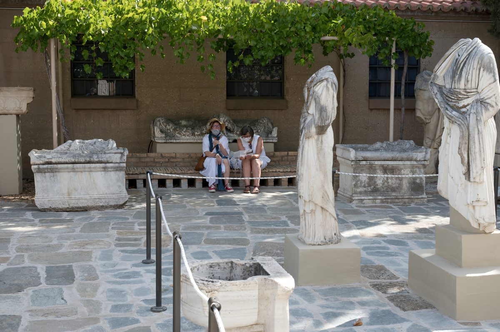

1 Corintios 4 — La Traducción Mister

⚠ La fotografía muestra la piedra y el mármol de época romana que se conservan en Corinto, no una escena de la carta. Julio César refundó Corinto como colonia romana en el 44 a. C., de modo que la ciudad a la que Pablo escribió en los años 50 era una colonia romana, y su museo conserva las estatuas y los sarcófagos de esa ciudad romana. El capítulo 4 no menciona la estatuaria; la imagen está aquí por la ciudad.

«Subordinados de Cristo». Hypērētas es un subordinado, formado de hypo, bajo, y eretēs, remero: el hombre que trabaja bajo cubierta y no es el capitán. Pablo se da a sí mismo y a Apolos ese nombre para su oficio, como Lucas llama hypērētai a los testigos que transmitieron la palabra (Lucas 1:2). La RV 1909 tiene «ministros de Cristo», y la TNM 1987 «subordinados de Cristo». Esta traducción conserva la imagen del remero, porque la imagen lleva el punto: el rango es bajo y el trabajo es real.
«Administradores de los misterios de Dios». Oikonómous, administradores, son los encargados de una casa que cuidan las provisiones y las cuentas de un amo, la figura de Lucas 16:1–8. Mystēríōn, misterios, es la misma palabra de 2:7: lo que Dios ha dado a conocer, no lo que oculta. La TNM 1987 tiene «secretos sagrados de Dios» y la RV 1909 «misterios de Dios»; esta traducción conserva «misterios».
«Lo que se busca en los administradores». WH, Treg y NA28 imprimen hōde, «aquí, en este caso», y el Textus Receptus lee ho de, «pero lo que»; el aparato da dos lecturas del primer término del versículo con el mismo sentido. La prueba de un administrador no es el tamaño de la bodega sino si es pistos, fiel, cuando el amo vuelve a revisar. La TNM 1987 tiene «lo que se busca en los mayordomos es que al hombre se le halle fiel», y la parábola del siervo hallado trabajando cuando vuelve el amo usa la misma prueba (Mateo 24:45–46).
«Algo de muy poca importancia». Eis elachiston, algo de poca monta, es la frase con la que Pablo nombra lo que menos le importa. El verbo anakrinō, examinar, es el de una audiencia, y hēmera, día, es la palabra para el día en que un tribunal se reunía. Por eso la traducción dice «día de tribunal»: el lector ve un tribunal y no un «día humano» sin explicar. La RV60 dice «tribunal humano», la NVI «cualquier tribunal humano» y la TNM 1987 «un tribunal humano».
«No tengo conciencia de nada contra mí». Oudèn gar emautō súnoida dice que Pablo tiene la conciencia limpia, y el verso no deja que eso decida el caso: dedikaiōmai, declarado justo, es un veredicto que pertenece al que juzga. El que lo examina es kyrios, el Señor. La TNM 2019 tiene «El que me juzga es Jehová», y la RV 1909 «el Señor es». El versículo siguiente pone al Señor como el que viene a juzgar («hasta que venga el Señor»), que es Cristo; por eso esta traducción mantiene «Señor» y dice en la nota que la lectura «Jehová» de la TNM es una elección que el griego no impone en esta frase.
«No juzguen nada antes de tiempo». Pro kairō, antes del tiempo debido, es una frase sobre el momento, y el capítulo aplaza el juicio hasta la venida del Señor. Ese Señor phōtisei ta krypta tou skotous, sacará a la luz las cosas ocultas de la oscuridad, la misma revelación que hace el día del juicio en Romanos 2:16. La NVI dice «Él sacará a la luz lo que está oculto en la oscuridad», y la RV60 «aclarará también lo oculto de las tinieblas».
«Más allá de lo que está escrito». La regla se da sin cita: Pablo no nombra ningún versículo. Las ediciones discrepan en dos puntos pequeños. WH, Treg y NA28 leen ha donde el Textus Receptus lee ho, una diferencia de género que no cambia el sentido, y el Textus Receptus añade phronein, «pensar», de modo que la regla dice «más allá de lo que está escrito [para pensar]». La TNM 1987 tiene «No vayas más allá de las cosas que están escritas», y la RV 1909 «no saber más de lo que está escrito».
«Hinchados a favor de uno en contra de otro». Physioō significa inflar, y el verbo recorre el capítulo en los versículos 6, 18 y 19 (ver physioo). Los corintios se han inflado a favor de un maestro y en contra de otro. El amor, en cambio, «no se envanece» (1 Corintios 13:4). La NVI dice «engreírse de haber favorecido al uno en perjuicio del otro», y la RV60 «os envanezcáis unos contra otros».
«¿Quién te distingue?». La pregunta desarma toda la reclamación de diferencia. Toda distinción que los corintios hacen entre sus maestros es un don, y un don se recibe, no se gana. La RV 1909 tiene «¿Porque quién te distingue?», y la TNM 2019 «¿quién hace que tú seas diferente a los demás?». El verbo diakrinō es el de separar, y la pregunta es qué separa a los corintios unos de otros.
«Ya están saciados. Ya son ricos». Los verbos describen lo que los corintios dicen de sí mismos: kekoresmenoi, saciados, y eplouthēsate, se han enriquecido. Pablo les devuelve esa reclamación. Chōris hēmōn ebasileusate, han empezado a reinar sin nosotros, y luego su deseo, que de verdad hubieran empezado a reinar para que él y los suyos reinaran con ellos, lleva la ironía hasta el final. La NVI tiene «¡Ya tienen todo lo que desean!», y la RV 1909 «ya estáis hartos, ya estáis ricos». La TNM 1987 pone una pregunta en cada cláusula.
«Al final, como condenados a morir». Epithanatios es la palabra para el hombre entregado a las fieras en la arena al final de un espectáculo, y eschatous, los últimos, es el lugar en la procesión. La imagen es un desfile de condenados con los apóstoles en la cola. La NVI tiene «como a los sentenciados a muerte» y la RV 1909 «como á sentenciados á muerte». El griego tiene dokō, me parece, sin hoti; la NVI y el Textus Receptus añaden hoti, que, y el sentido es el mismo. El público es theatron: el mundo, los ángeles y las personas (apóstol).
«Necios por Cristo; sabios en Cristo». La frase pone pares uno frente a otro sin verbo en medio. Mōroi, necios, es la palabra de 3:18, donde a los corintios se les dijo que se hicieran necios para ser sabios; los apóstoles ya están ahí. Átimoi, sin honra, es la palabra para el hombre sin posición, y los corintios la tienen. La RV 1909 tiene «nosotros necios por amor de Cristo», y la TNM 1987 «nosotros somos necios por causa de Cristo». La NVI dice «¡A ustedes se les estima, a nosotros se nos desprecia!».
«Hasta esta misma hora». La lista es un catálogo de penurias en el orden en que Pablo las da: hambre y sed, mala ropa, golpes con los puños (kolaphizómetha, el verbo de los golpes de Mateo 26:67) y ningún hogar fijo. La RV60 dice «estamos desnudos» y la NVI «nos falta ropa». El verbo para no tener hogar, astatoumen, significa no tener un lugar fijo.
«Nos cansamos trabajando con nuestras propias manos». Kopiōmen ergazomenoi, nos cansamos trabajando, es la fatiga de un artesano. Pablo trabajó con sus manos para mantenerse (Hechos 20:34). La NVI dice «Con estas manos trabajamos duro», y para loidoroumenoi, cuando nos insultan, la misma bendición de Romanos 12:14: «Si nos maldicen, bendecimos».
«Cuando nos calumnian, rogamos». El texto impreso tiene dysphēmoumenoi, difamados, con WH y NA28; Treg y el Textus Receptus leen blasphēmoumenoi, blasfemados, una diferencia de una sílaba. La RV 1909 tiene «Somos blasfemados, y rogamos» y la TNM 1987 «cuando se nos infama, suplicamos». La frase «la basura del mundo, el desecho de todas las cosas» traduce perikátharmata y peripsēma, lo que se raspa y se echa fuera. Perikátharma era la palabra para el desecho que se expulsaba para purificar una ciudad, y Pablo la usa de los apóstoles.
«No para avergonzarlos, sino para amonestarlos». Los verbos son entrepōn, avergonzando, y nouthetōn, amonestando. WH y NA28 imprimen el participio, y Treg y el Textus Receptus la forma nouthetō, «amonesto»; el sentido es el mismo. El tono es el de la casa: tékna agapēta, hijos amados. La RV 1909 tiene «no escribo esto para avergonzaros: mas amonéstoos como á mis hijos amados».
«Diez mil ayos». Paidagōgous no es un maestro. El paidagōgos era el esclavo de la casa que llevaba al niño a la escuela y lo mantenía en orden, el guardián del niño y no quien le enseñaba (Gálatas 3:24). El contraste es entre muchos guardianes y un padre: patéres, padres, son los que dan la vida al niño, y Pablo dice que los engennēsa, los engendró, dia tou euangeliou, por medio del evangelio. La RV 1909 tiene «ayos», la palabra castellana para el tutor del niño, y la TNM 2019 «10.000 tutores». La NVI dice «miles de tutores».
«Háganse imitadores míos». Parakalō es un ruego firme, y mimētai, imitadores, comparte raíz con la palabra «mímica». Pablo pide la imitación de una vida que ya ha mostrado: ha dicho que es padre, y lo que los hijos copian es la vida del padre. La RV60 dice «os ruego que me imitéis», y la NVI «les ruego que sigan mi ejemplo». La Douay añade «como también yo lo soy de Cristo», una frase que el griego de este versículo no tiene; la toma de 1 Corintios 11:1.
«Timoteo, mi hijo amado y fiel». El aparato tiene el orden mou tekna en WH, Treg y NA28, y tekna mou en el Textus Receptus; la frase es la misma. Timoteo es el joven a quien Pablo tomó en Hechos 16:1. Él les recordará tas hodous mou tas en Christō Iēsou, mis caminos en Cristo Jesús, la palabra hodos para un camino, una manera de vivir. La RV60 dice «mi proceder en Cristo»; la RV 1909 «mis caminos cuáles sean en Cristo». Esta traducción da la misma palabra ekklēsia como congregación (ekklesia, y Timoteo en la enciclopedia).
«Algunos se han llenado de orgullo». El verbo physiōthēsan es el aoristo del verbo del versículo 6, y su sujeto, tines, algunos, queda sin nombrar. La cláusula es una condición con su propia razón: se hinchan como si Pablo no fuera a ir. La RV60 tiene «como si yo nunca hubiese de ir a vosotros», y la NVI «pensando que no iré a verlos». La TNM 1987 dice «están hinchados como si yo en realidad no hubiera de ir a ustedes».
«Si el Señor quiere». La condición es ean ho kyrios thélēsē, si el Señor quiere. El viaje de Pablo depende de la voluntad del Señor, y la palabra es kyrios, que las ediciones dan como Señor sin diferencia en el texto. El shelf la lee de dos maneras: la TNM 2019 tiene «si Jehová quiere», y la RV60 «si el Señor quiere». La gramática no fija el referente, así que esta traducción mantiene «el Señor» y deja la pregunta abierta. El verbo gnōsomai, conoceré, es lo que una visita puede comprobar: no el habla, logon, sino el poder, dynamin (dinamis).
«El reino de Dios no consiste en palabras». Ou gar en lógō, no en palabra, y el reino es basileia tou theou, el reino de Dios (basileia). Pablo hace del reino un asunto de poder. La RV60 dice «el reino de Dios no consiste en palabras, sino en poder», y la NVI «no es cuestión de palabras, sino de poder».
«Con vara, o con amor y espíritu de mansedumbre». Rhabdos, vara, es el bastón del maestro o del que guía animales, y la pregunta es cuál de las dos cosas prefieren los corintios. La frase en pneumati praütētos, con espíritu de mansedumbre, es la misma formulación de la petición de Gálatas 6:1. La NVI tiene «con un látigo», y la RV 1909 «con vara, ó con caridad y espíritu de mansedumbre».
Patrones que vale la pena recordar
Donde esta traducción conserva las palabras exactas: «subalternos» para hypērētas y «administradores» para oikonómos; «hinchados» para physioō en 4:6, 4:18 y 4:19; «gloriarse» para kauchaomai, el verbo de 3:21 y 4:7; «necios» para mōroi, la palabra de 3:18; «día de tribunal» para hēmera en 4:3; «ayos» para paidagōgous en 4:15.
Ecos pagados. La administración de los misterios de 2:7; el día que revela la obra de cada uno y el fuego que la prueba, de 3:13, ahora el Señor que saca a la luz lo oculto (4:5); la necedad de 1:18 y 3:18, vuelta sobre los apóstoles y luego sobre los corintios (4:10); el poder frente a las palabras de 2:4, cerrado en 4:20; la jactancia de 1:31, respondida en 4:7; y los bebés de 3:1, que ahora tienen un padre (4:15).
Ecos sembrados. El Señor que saca a la luz lo oculto (4:5) es el juez al que vuelve la carta al final; la vara de 4:21 se convierte en disciplina cuando Pablo trata el caso de pecado sexual en la congregación (5:1–5, ya en estas páginas). Los padres de 4:15 vuelven cuando Pablo escribe sobre el hombre que vive con la mujer de su padre.
Próxima entrega: 1 Corintios 5, ya en estas páginas. Pablo deja los bandos y pasa a un hombre que vive con la mujer de su padre, un caso que dice que ya ha juzgado, y a lo que la congregación debe hacer al respecto.